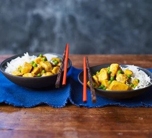

Back
Chinese Chicken Curry

Description
Cook an easy, healthy curry with just 15 minutes preparation.
Serve this replica of your favourite takeaway dish with fluffy rice for a wholesome family meal
Ingredients
- 4 skinless chicken breasts, cut into chunks (or use thighs or drumsticks)
- 2 tsp cornflour
- 1 onion, diced
- 2 tbsp rapeseed oil
- 1 garlic clove, crushed
- 2 tsp curry powder
- 1 tsp turmeric
- ½ tsp ground ginger
- pinch of sugar
- 400ml chicken stock
- 1 tsp soy sauce
- handful of frozen peas
- rice to serve
Steps
- Toss the chicken pieces in the cornflour and season well. Set them aside.
- Fry the onion in half of the oil in a wok on a low to medium heat, until it softens – about 5-6 minutes – then add the garlic and cook for a minute.
Stir in the spices and sugar and cook for another minute, then add the stock and soy sauce, bring to a simmer and cook for 20 minutes.
Tip everything into a blender and blitz until smooth.
- Wipe out the pan and fry the chicken in the remaining oil until it is browned all over.
Tip the sauce back into the pan and bring everything to a simmer, stir in the peas and cook for 5 minutes.
Add a little water if you need to thin the sauce. Serve with rice.